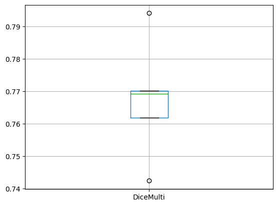

vision_models_evaluation
Install
To install the library, just run:
pip install vision_models_evaluationHow to use
This library provides a method that can help you in the process of model evaluation. Using the scikit-learn validation techniques you can validate your deep learning models.
In order to validate your model, you will need to build and train various versions of it (for example, using a KFold validation, it is needed to build five different models).
For doing so, you need to provide: the DataBlock hparams (hyperparameters), the DataLoader hparams, the technique used to split the data, the Learner construction hparams, the learning mode (whether to use a pretrained model or not: fit_one_cycle or finetune) and the Learner training hparams. So, the first step is to define them all:
db_hparams = {
"blocks": (ImageBlock, MaskBlock(codes)),
"get_items": partial(get_image_files, folders=['train']),
"get_y": get_y_fn,
"item_tfms": [Resize((480,640)), TargetMaskConvertTransform(), transformPipeline],
"batch_tfms": Normalize.from_stats(*imagenet_stats)
}
dl_hparams = {
"source": path_images,
"bs": 4
}
technique = KFold(n_splits = 5)
learner_hparams = {
"arch": resnet18,
"pretrained": True,
"metrics": [DiceMulti()]
}
learning_hparams = {
"epochs": 10,
"base_lr": 0.001,
"freeze_epochs": 1
}
learning_mode = "finetune"Then, you need to call the evaluate method with those defined hparams. After the execution, the method will return a dictionary of results (for each metric used to test the model, the value obtained in each fold).
r = evaluate(
db_hparams,
dl_hparams,
technique,
learner_hparams,
learning_hparams,
learning_mode
)Finally, you can plot the metrics using a boxplot from pandas, for example:
import pandas as pd
df = pd.DataFrame(r)
df.boxplot("DiceMulti");
print(
df["DiceMulti"].mean(),
df["DiceMulti"].std()
)
You can use this method to evaluate your model, but you can also use it to evaluate several models with distinct hparams: you can get the results for each of them and then plot the average of their metrics.